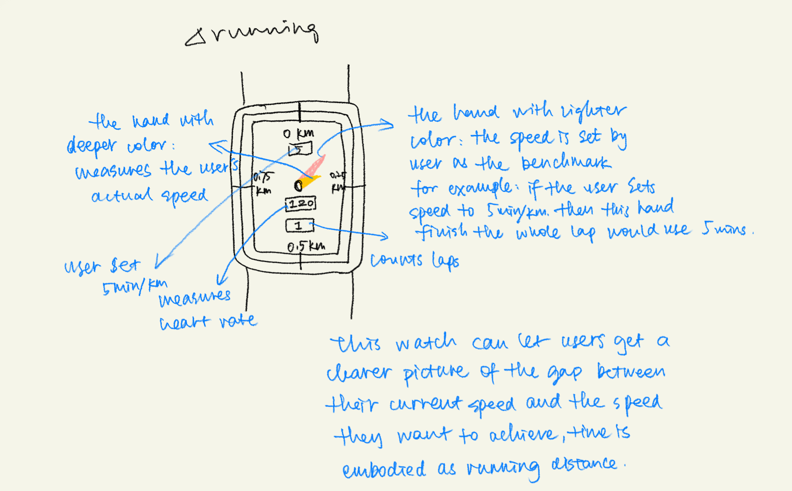
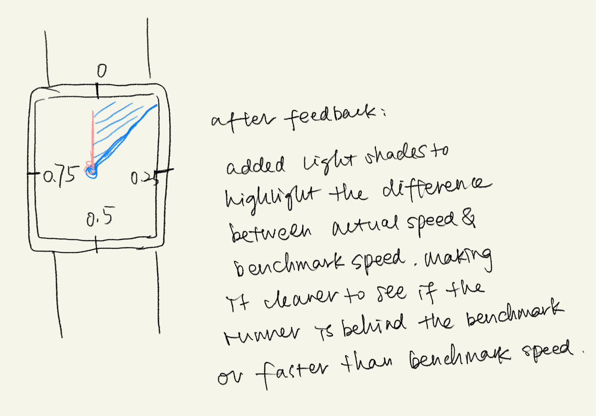

Final Clock 1
Sketch iteration documentation (paper/hand-drawn photos)



Design process:
- Keeping familiar form while adding new encoding: Rather than abandoning the watch face entirely, I kept the circular dial as the primary canvas. The key design decision was to add a second hand for target pace alongside the actual pace hand, so the gap between them encodes performance directly as a visual angle rather than a numeric difference.
- Layering information by priority: The dial handles the most time-sensitive information, pace, while the panel rows below handle slower-changing data like heart rate, lap count, and total distance. This reflects the visualization principle of matching update frequency to visual prominence: the fastest-changing data gets the most central, animated channel.
- Color as a performance signal: Orange for actual pace and blue for target pace were chosen because they are perceptually distinct and carry an intuitive connotation: warm for effort, cool for goal. The sector shading between the two hands further reinforces whether you are over or under target without requiring any text reading.
Self-reflection / future work:
- The pace dial does not communicate direction of change. Currently the actual pace hand just sits at a position; it does not show whether pace is improving or deteriorating. A future version could add a small trailing arc or fade behind the hand to show its recent trajectory, making the trend visible without adding extra numeric panels.
- Heart rate encoding is purely numeric. The heart rate panel changes background color when the value is high, but this is a weak signal. A future version could encode heart rate as a pulsing animation or a separate small arc dial, making the effort level perceptible even in peripheral vision, which matters more during an actual run than when sitting at a desk.